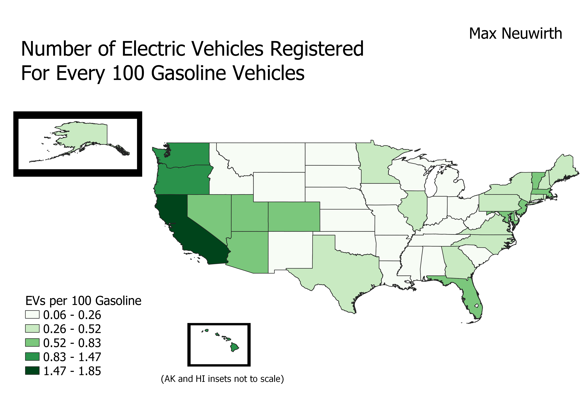

Homework 7: Chloropleth Map
Max Neuwirth
This map shows the relationship between the number of electric vehicles registered in each of the 50 U.S. states and the number of registered conventional gasoline vehicles. As the gradient increases, as does the number of EVs for every 100 gasoline cars. Besides my interest in electric vehicles, I created this map to serve as a companion to many existing maps showing only the count of electric vehicles in each state. Those existing maps do not take into account the number of total vehicles in each state, which could paint a misleading picture of EV purchasing in the U.S.

Data used for this project
Cleaned CSV dataset
Original CSV
Data manually combined into original CSV
Link to geojson